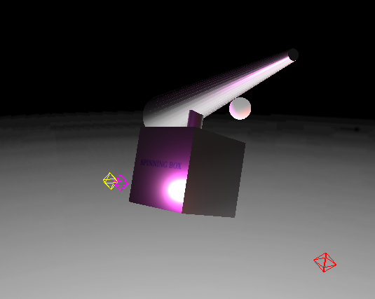

Features Prog5
Kai Hay
kthay #1840250
Heli Box
src/main.js
src/index.html
exampleClip.webm
The clip freezes a lot when zooming in an out because my machine can't handle recording while the program runs
Also, the background texture doesn't work off of local for some reason
Here is the overview/documentation
To run open the dist directory in terminal and run "python3 -m http.server 8000" and visit the webpage. Just in case Here hosted on github
